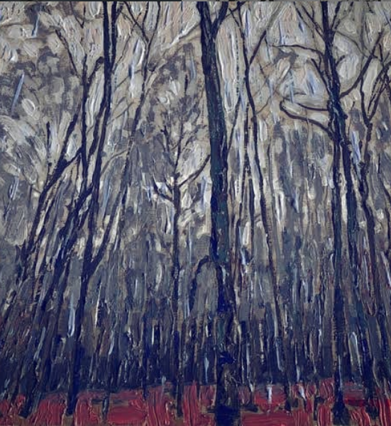

When the sun shines on you
You'll be a fool to turn away
Even if it burns sometimes
Each time you'll still be there
When the lightning strikes
Will you consider yourself lucky?
Or are you unlike me?
And i know this is just a facade
That i cant break through
But If I scream?
Will the glass shatter
From around me
And not be...
pieced together
The thought of time ending
a sentence that maddens
So will it be?
Or wont it be?
When the cast of horizon
Bites back time
On the cusp of the limit
Of thoughts ragged but fingers intertwined
Shivering gold at dusk
To bring back life to the dying
To soak out the rain
Left deep within from the storms that encompassed
Ravaged by tyranny of hearts that loved, but for a while
Feigning glory to evade fixture
'So will it be?'
'Or wont it be?'
voices wrangle within as the layers peel
A test that maddens but with time reveal
In the middle there was this castle
Not regal or impressive
But dark and intimidating
It cast its shadow on the lands surrounding
The ponds dry the trees bare
No birds in the sky, no deer or hare
Beyond the grounds everything exploded into color
The terrains swirled to life as they escaped shadows of decay
Past the restraint there is so much to see
and explore so why do i stay in shambles
As they dance in moonlight from twilight to dawn
an empty canvass
waiting a brushes touch
morbidity is using black on black
and again
virtue sits still
looking for the calm of the conceited
it can be bittersweet and somewhat malcholic
surrenders the night at the slightest touch of light
opens the arms for forming in forever
the canvas stays bleak
the paint still dark
arms open still
longing for lonely forever to end

but only god could only have the answer
i tread upon my chances
moments alone
steps so slow
only fate is my real captor
my loves burning to ashes
moments alone
steps so slow
my cries are lullaby for the broken
my screams are telling me that im aching
and my tears baptize me
And I've learned
physical doesn't trump the emotional
because the sharp things
they don't work for me anymore
and i cant seare you away too
.JPG)